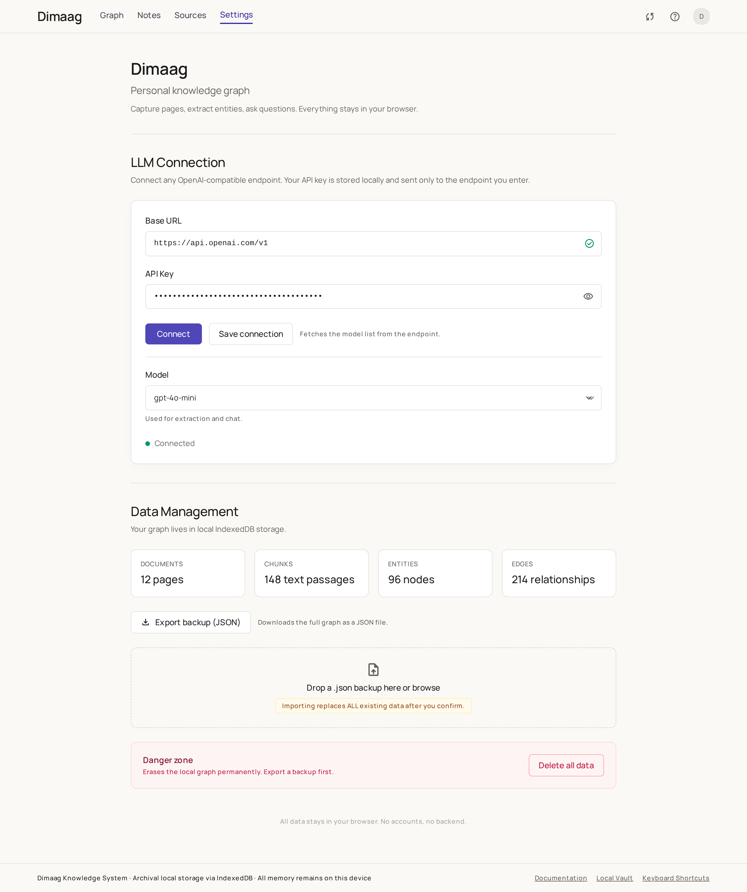
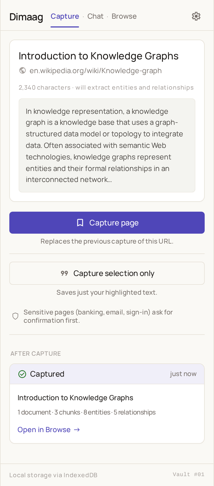
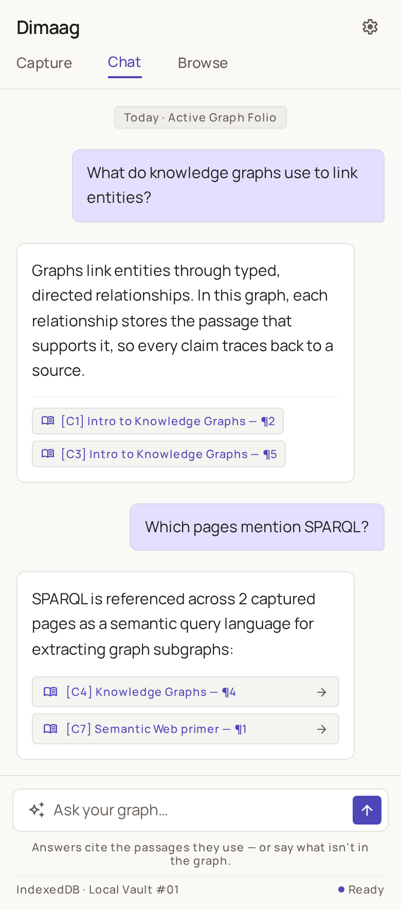
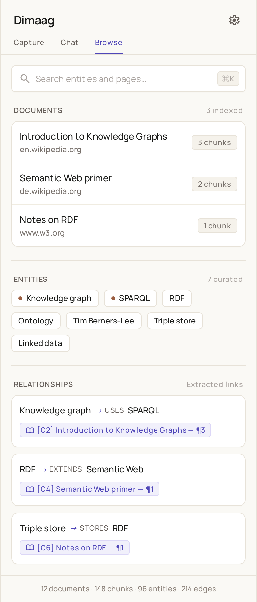

Athenaeum Quiet Workspace · Stitch project 74642379538573749 · 4 screens
LLM connection (base URL, API key, connect, model dropdown) + data management (stats, export, import, danger zone)

Current page card, text preview, capture page / capture selection, sensitive-page note, after-capture state

Soft bubbles, assistant answer cards, citation chips, composer with honesty helper line

Search, documents list, entity chips (terracotta = pinned), typed relationship rows with citation chips
